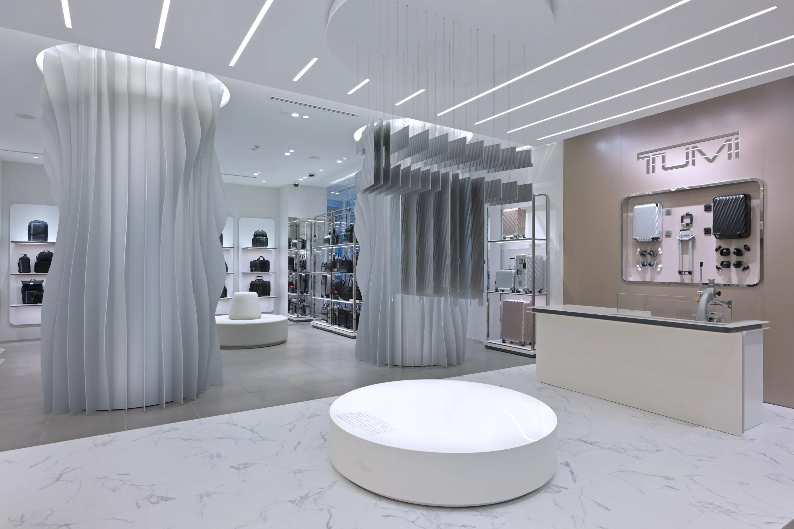
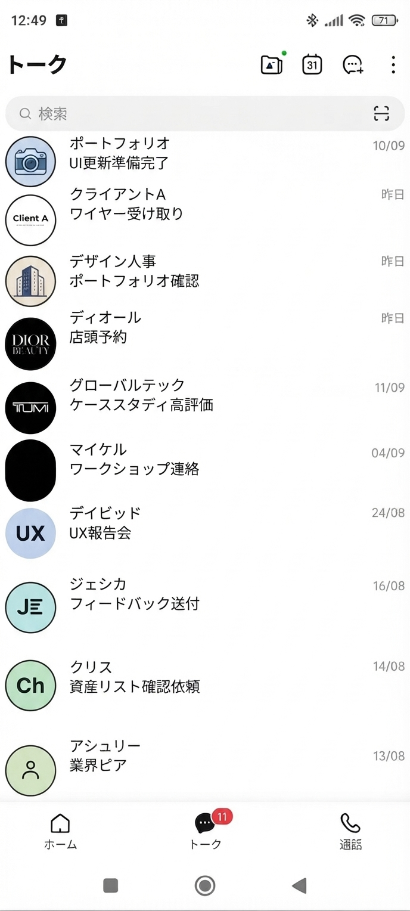
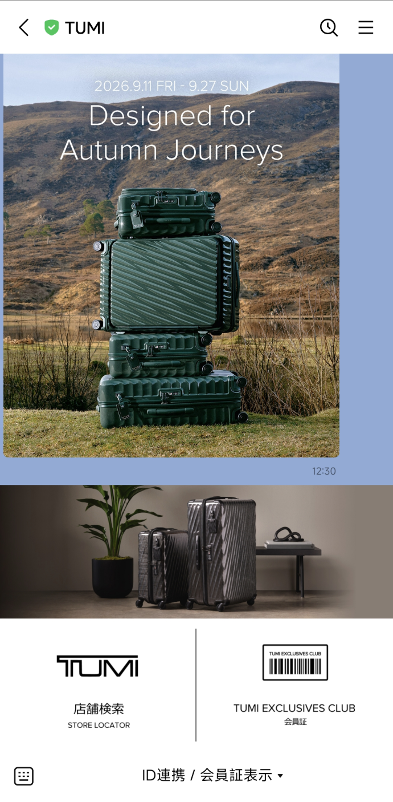
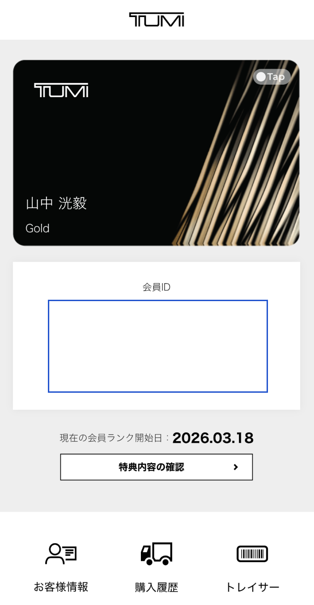
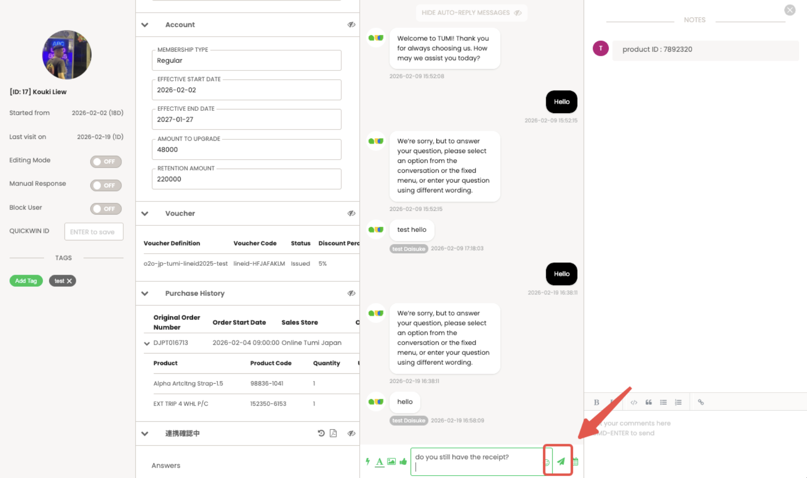
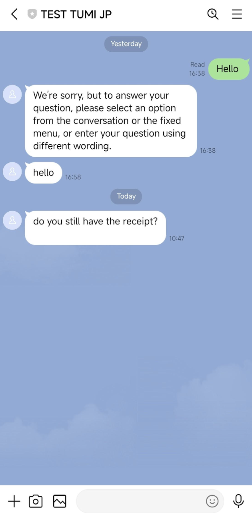
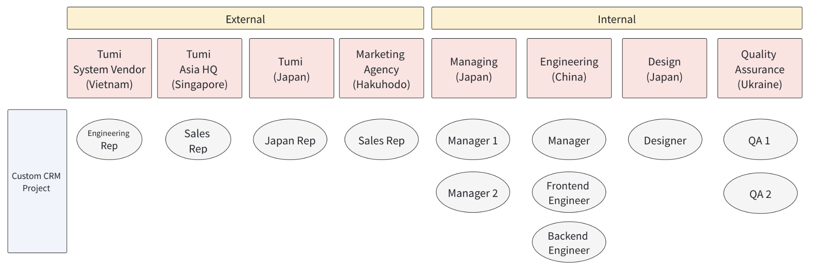
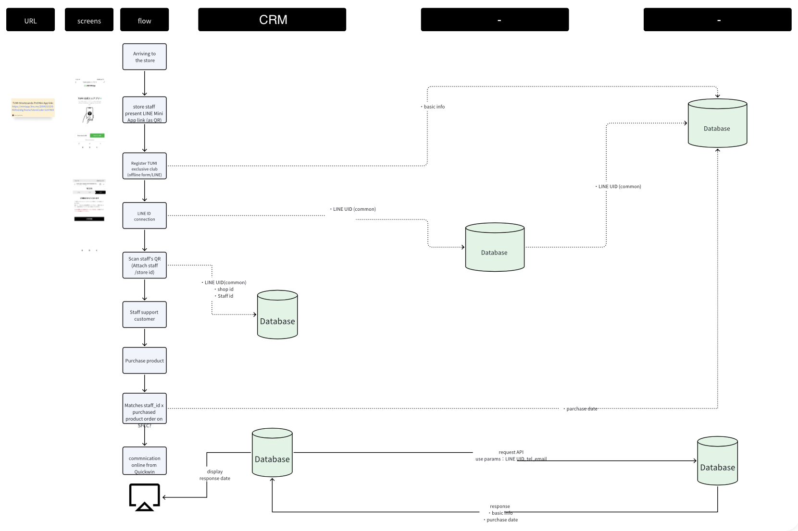
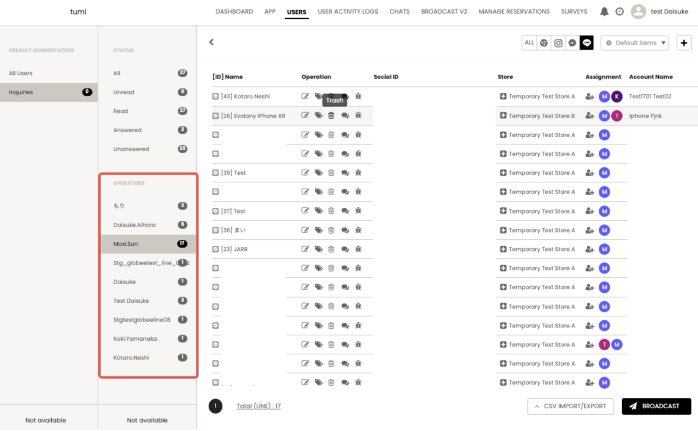
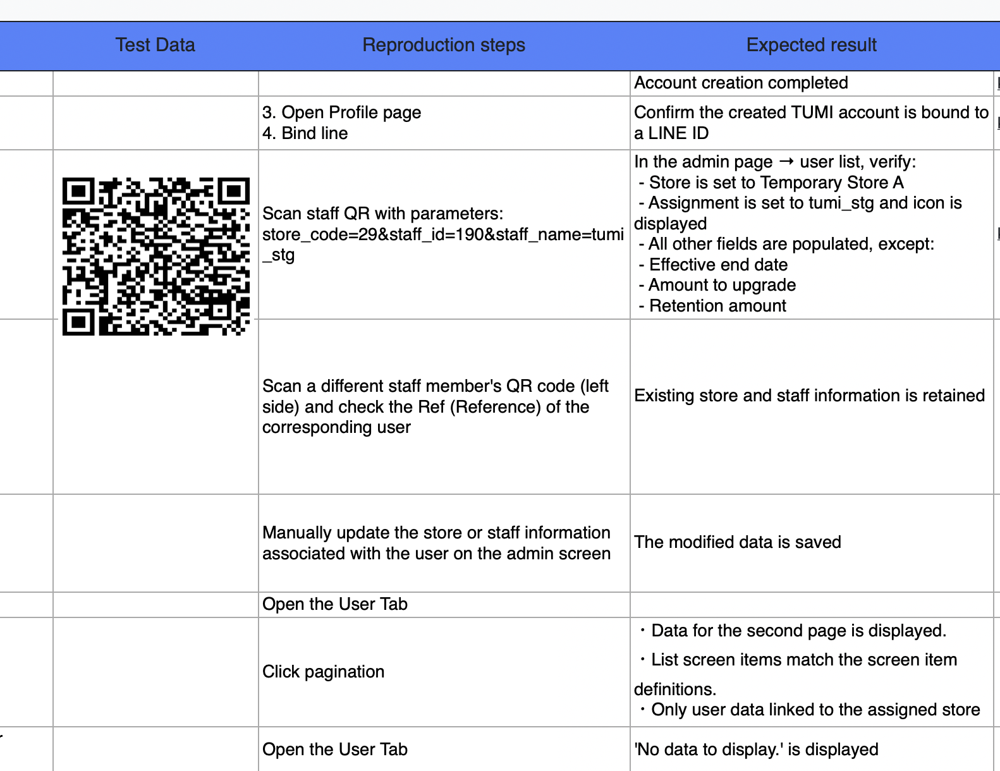

Tumi
In-Store CRM Platform

The Opportunity
As Tumi looks to modernize member registration and customer support, each existing store needs an easier way to onboard customers in person. We partnered with Tumi and Hakuhodo to build a custom CRM that registers customers on the spot and connects them over LINE.




The Solution
To connect Tumi customers with branch staff after purchase, we built a custom CRM with LINE membership registration and 1-to-1 staff chat. The CRM registers in-person customers as Tumi members through LINE, matching each one to a dedicated staff contact reachable directly in-app. The result: every customer leaves with an ongoing line to their local store team.


CRM Platform
The CRM platform lists every registered customer by store and lets branch staff assign each one to a dedicated operator. Customer details and purchase history are pulled directly from Tumi's existing Salesforce database.

My Duties
As Project Manager, I coordinated cross-functional stakeholders from scope through release, ensuring deliverables met required standards at each stage of the software development lifecycle.
Stakeholders
Coordinated a cross-border team across Tumi's departments, Japan's leading marketing agency Hakuhodo, engineering, design, and QA.

Userflow
Led the CRM's integration with Tumi's Salesforce and official LINE APIs, from sourcing credentials across Tumi departments to implementing and verifying against their external systems.

Quality Assurance
Customer info in the CRM (shown below) took 25 seconds to load; it now loads in 100 ms. Traced a post-launch delay in the CRM customer list to the vendor's endpoint design, then scoped a separate phase and coordinated its restructure to our engineering team's recommendation.

Directed QA against the test cases and brought in Tumi's vendor and branch staff for user acceptance testing.
